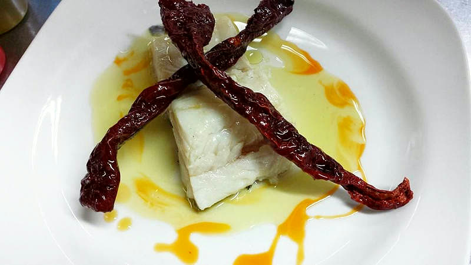
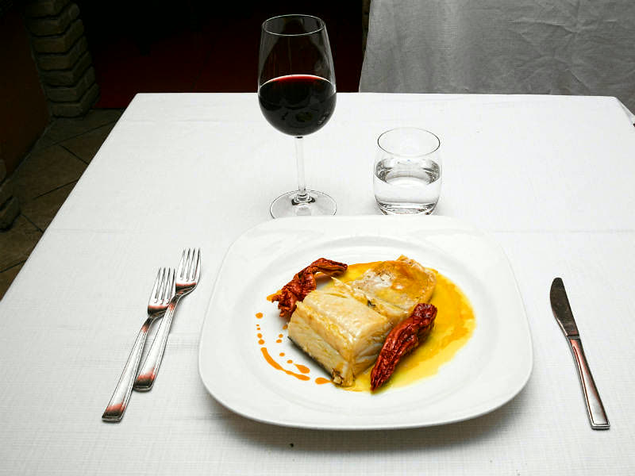
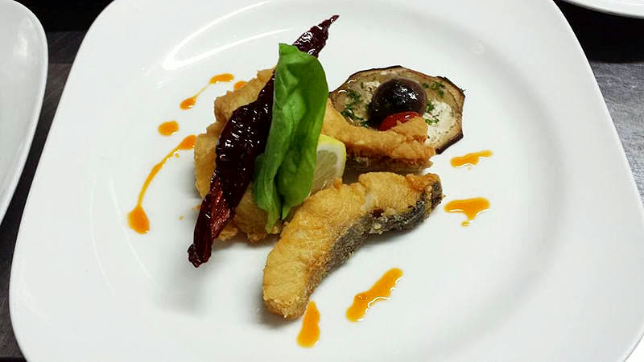
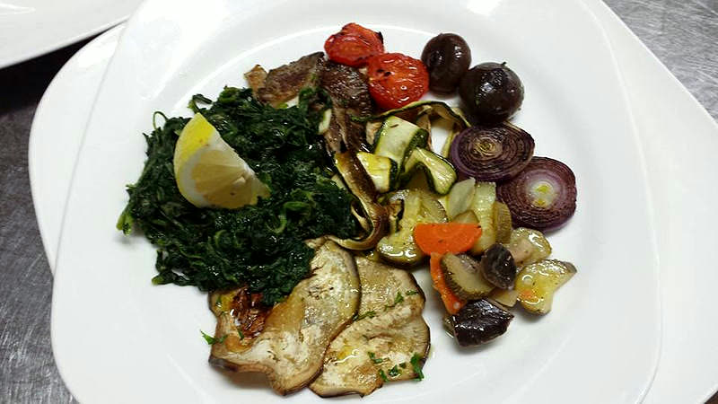

Osteria · Avigliano (PZ)
Osteria Gagliardi
Il piacere di un lungo viaggio.
Chiocciola Osterie d'Italia 2026
Nel centro storico, nel piano Gagliardi da cui prende il nome.
via Martiri Ungheresi, 85021 Avigliano (PZ)

Dal loro menù
Il baccalà, in sei modi
«Ricchissimi antipasti (squisite le 6 modalità con cui presenta il baccalà). Eccellenti primi piatti cucinati con il baccalà, con i funghi cardoncelli e il tartufo. Variegati e ottimi secondi a base di baccalà, di manzo (squisito il filetto al pepe verde) di agnello e di maiale. Per i più esigenti un ricercato carrello di formaggi.» Osteria Gagliardi, dal loro sito
Il baccalà torna negli antipasti, nei primi e nei secondi: è il filo che attraversa il menù come lo descrivono loro. Accanto ci sono i funghi cardoncelli e il tartufo, e le materie prime che l'osteria dichiara «rigorosamente del posto controllate e certificate».



Cosa si mangia
Diciannove piatti, fotografati uno per uno
Sono le fotografie che l'osteria pubblica dei propri piatti. Le didascalie dicono soltanto quello che si vede: il nome che ogni piatto ha sul menù non lo scriviamo noi.
E quattro scattati in verticale, che restano alla loro misura.
Il riconoscimento
Chiocciola Osterie d'Italia 2026
Quattro in tutta la Basilicata
Nella guida Osterie d'Italia 2026 di Slow Food la Basilicata ha quattro Chiocciole, e una è questa.
Slow Food la presenta come «il massimo riconoscimento, assegnato ai locali che si distinguono in modo particolare per l'ambiente, la cucina, l'accoglienza in sintonia con Slow Food».
Prima di questa, altre tre
La Chiocciola era già sua nelle edizioni 2018 e 2020: negli elenchi di quegli anni l'osteria c'è, alla voce Basilicata.
Il 2026 è il riconoscimento più recente.
Chi c'è dietro
Stefano Errichetti
Per anni ha fatto il maître in giro per l'Italia: prima a Brescia, poi a Cortina d'Ampezzo, infine a Roma. Poi è tornato in Basilicata a mettere a frutto quello che aveva imparato. Il primo passo è del 2003, con il ristorante «La Strettola», che è poi diventato l'Osteria Gagliardi.
«La pietra, il tufo, il vetro. Tonalità di colori caldi dal rosso al marrone. Legni pregiati, cotoni selezionati, porcellane ricercate. L'Osteria Gagliardi è anche questo. Ma è sopratutto il progetto di un giovane ed esperto ristoratore che nel cuore di Avigliano ha riportato dignità e pregevolezza alla cucina.» Osteria Gagliardi, dal loro sito
L'osteria sta nel centro storico, nel «piano Gagliardi» da cui prende il nome. Dentro, scrivono, si trovano «l'anima, il calore e l'accoglienza di sempre», una cucina tradizionale rielaborata, «una cantina impegnativa» e la pasticceria di produzione propria.
Anche al banco
L'Antica Caffetteria e la Pasticceria Roma
L'osteria non è il solo locale di Stefano Errichetti. L'Antica Caffetteria è il primo che ha aperto ad Avigliano, con i suoi soci; la Pasticceria Roma è a Ruoti. Sono tre indirizzi diversi e tre numeri diversi.
Antica Caffetteria
Piazza Gianturco 29, 85021 Avigliano (PZ)
Colazioni, tè in foglia, cioccolate calde e, d'estate, i tavolini in piazza e i gelati artigianali.
Pasticceria Roma
Via Roma 12, 85056 Ruoti (PZ)
Pasticceria fresca e torte su ordinazione per matrimoni, promesse, battesimi e compleanni; e i buffet salati per le feste.
Dove siamo e come si prenota
Avigliano, centro storico
Il venerdì, il pesce
Il venerdì, su prenotazione, l'osteria propone piatti a base di pesce.
Va chiesto quando si prenota.
Per gli orari e per prenotare, il telefono è la strada più corta: 0971 700743.